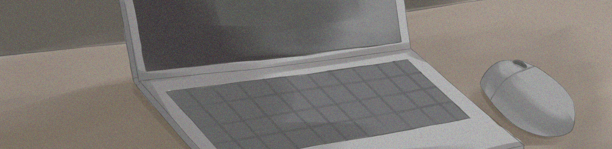

今日も普段と変わらない、つまらない日だった。
講義は就活の話ばっかりで・・・まぁ大学３年だから仕方ないか。
でも正直就活なんてあまり重要視してない。なんたって自分にはこの【やり直せるサイト】がある。

このサイト名は『Re:cord-レコード-』。
簡単に言えば、１日ごとにセーブができて、あとからその１日をロードすることができるサイト・・・かな。使い方は、１日の終わりにこのサイトに書き込んで、セーブボタンを押せばセーブ完了。まぁ所謂ゲームでいうセーブ・ロードの現実版！、みたいな感じ？
まじファンタジーみたいな話だよね。
大体半年前にこのサイト見つけて、それからずっと使ってるけど、今のところ使い得って感じかな。
やり直しが利くって超便利だね。
例えば、好きなバンドのCD予約し忘れた時とか、課題出し忘れた時とか、行きいたいライブの日が被ってた時とか、あとテストで赤点取った時とか。これ全部やり直しできるの天才すぎる！もう何回ロードしたか覚えてないくらいお世話になった。
だけど、1つ欠点がある。それは、１か月すればセーブデータが消えてしまうこと。だからやり直すには１か月以内にしなくちゃいけないのが難点。まぁでも今のとこそんなに困ってないから言うほど気にしてないけどね。
就活を重視してない理由も、今までみたいにやり直せるだろうと高を括ってるから。やり直せるならどうとでもなるでしょ。折角の不思議な力？なんだし使わない手はないよね～。